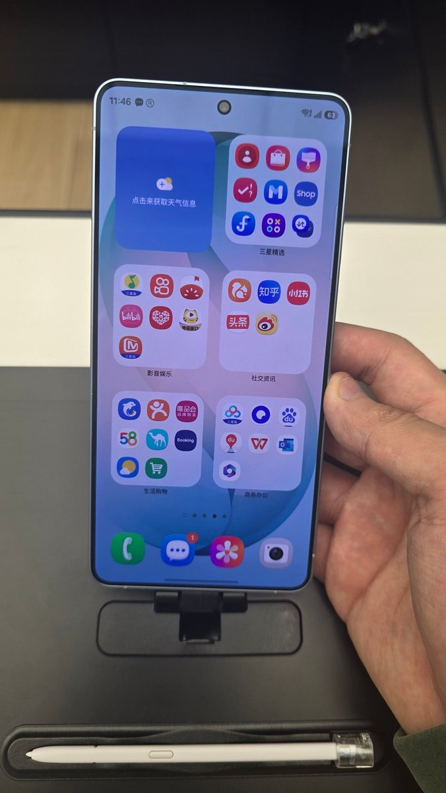

桃濑玲奈
@MomoseReina
@NiuBoss123 不如去apple store摸iPhone17😋
想买😋😋😋

NiuBoss123 | 御坂秋生
@NiuBoss123
做的最正确也最错误的决定就是去三星授权店摸 s26u，丝毫没有考虑自身负债情况就决定明年要买台版
也许是没吃过细糠，我觉得这屏幕也没那么差（
（同时预装 Microsoft 365 和 WPS Office 的也是无敌了） https://t.co/jACz4s8FPc